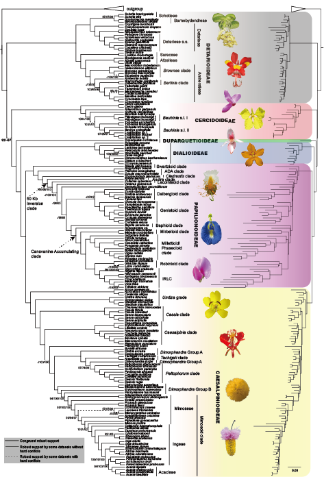

1. Phylogenomics of Leguminosae

Reconstructing legume phylogenetic relationships using nuclear, chloroplast genomic and mitochondrial phylogenetic datasets to reveal the taxonomic categories of major clades and resolve many recalcitrant relationships. My PhD project has successfully resolved many of the Leguminosae’s thorniest nodes through comprehensive analysis within the legume family using the chloroplast genomes of more than 180 species representing almost all major clades of the family. Most analyses produced largely congruent topologies with strong statistical support, and provided strong support for resolution of some long-controversial deep relationships among the early diverging lineages of the subfamilies Caesalpinioideae and Papilionoideae (Zhang et al., 2020, Syst Biol). This study provides an important basis for phylogenomic and diversification studies of the family, but there is still a need to further expand sampling and sequencing to reveal the phylogenetic relationships of the family to a greater extent.
Additionally, we thoroughly characterize conflicting phylogenomic signal across the plastome in light of the family’s complex history of plastome evolution.
2. Diversification of Leguminosae
3. others